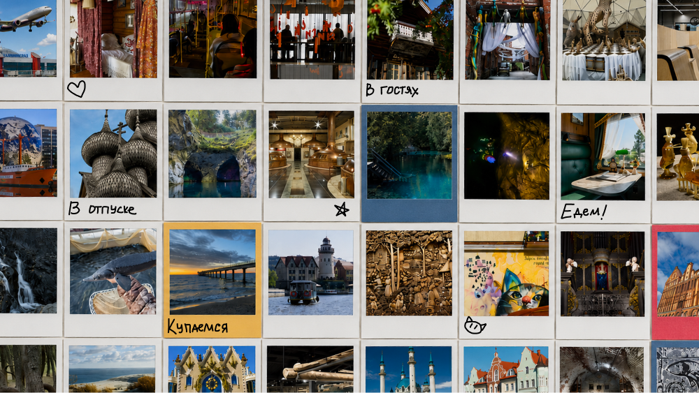

Соберите галерею будущего отпуска
Галерея будущего отпуска
Больше впечатлений из города

Спецпроект совместно с сервисом путешествий Туту
Выбираем, где отдохнуть и какие впечатления привезти домой
Чтобы не сверяться с картой работающих заправок, можно отправиться в путешествие на самолёте, поезде и автобусе. «Юный техник» изучил путеводители по 82 туристическим регионам России и собрал конструктор впечатлений: в нём можно найти место по тому, каким хочется запомнить отпуск.
После путешествия в телефоне остаётся галерея воспоминаний: у одного — закаты, виды степей и горных массивов, у другого — стрит-арт, старинная архитектура и местные деликатесы. Вместе с конструктором впечатлений подсмотреть фотоальбом можно ещё до поездки. Если подборка совпадёт с ожиданиями, можно сразу выбрать тур с проездом и проживанием.
Передвигайте ползунки, чтобы подобрать путешествие под свои предпочтения. Чем сильнее вы сдвинете конкретный ползунок, тем больше карточек в галерее заменится на более подходящие по теме.
Больше технологий. Ползунок для тех, кого интересуют машины, фабрики и заводы. После отпуска в галерее сохранятся снимки из оружейных мастерских и мастер-классов по кузнечному делу. Рекомендуем пройти маршрут нефтяника в Тюмени или отправиться на экскурсию на Саяно-Шушенскую ГЭС в Красноярском крае.
Больше природы. Для путешественников, которых манят горы, пещеры, степи и леса. Чтобы сфотографировать полярное сияние, отправляйтесь в Мурманскую область, лотосовые озёра — в Хабаровский край, горбатых китов и морских котиков — на Курильские острова.
Больше экстрима. Если хочется провести отпуск в движении, можно отправиться на ночной астротуризм в Карачаево-Черкесии, полетать на параплане в горах Республики Марий Эл и попариться в бане на Алтае.
Больше истории. В разных уголках России местные жители знакомят с обычаями, ремёслами и укладом жизни. Если хочется прикоснуться к истории и культуре, отправляйтесь в тур по деревянному зодчеству Карелии, в стойбище оленеводов «Мув Тай» рядом с Салехардом или на чайные плантации Краснодарского края.
Галерея будущего отпуска
Больше впечатлений из города